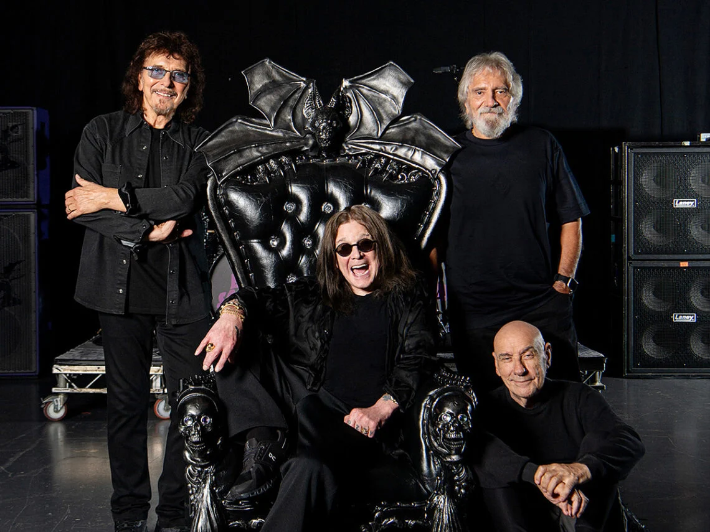

Про гурт
Black Sabbath — британський рок гурт, який вважається засновником жанру хеві-метал. Гурт був створений у 1968 році в Бірмінгемі.
Їх музика вирізняється темним звучанням, важкими гітарними рифами та містичними текстами.
Black Sabbath справили величезний вплив на розвиток металу та рок музики в цілому.
Гурт спочатку називався Earth, але пізніше був перейменований у Black Sabbath.
У 1970 році вийшов їх дебютний альбом Black Sabbath, який фактично заклав основу жанру хеві-метал.
У 1970-х роках гурт випустив серію культових альбомів, які зробили їх одними з найвпливовіших музикантів у світі.
Попри зміни складу, Black Sabbath залишили величезний слід в історії музики.
Учасники гурту
- Оззі Осборн — вокал (оригінальний склад)
- Тоні Айоммі — гітара
- Гізер Батлер — бас-гітара
- Білл Ворд — ударні
- Ронні Джеймс Діо — вокал (пізніше)

Найпопулярніші пісні
- Paranoid
- Iron Man
- War Pigs
- Children of the Grave
- Black Sabbath
- Heaven and Hell
- Sabbath Bloody Sabbath
- N.I.B.
Альбоми
- Black Sabbath (1970)
- Paranoid (1970)
- Master of Reality (1971)
- Vol. 4 (1972)
- Sabbath Bloody Sabbath (1973)
- Sabotage (1975)
- Heaven and Hell (1980)
- 13 (2013)
Концерти та вплив
Black Sabbath виступали по всьому світу та стали культовим живим гуртом.
Їхній стиль сценічних виступів був більш темним і атмосферним, що підкреслювало їх музику.
Вони вплинули на тисячі гуртів у жанрі метал та хард-рок.